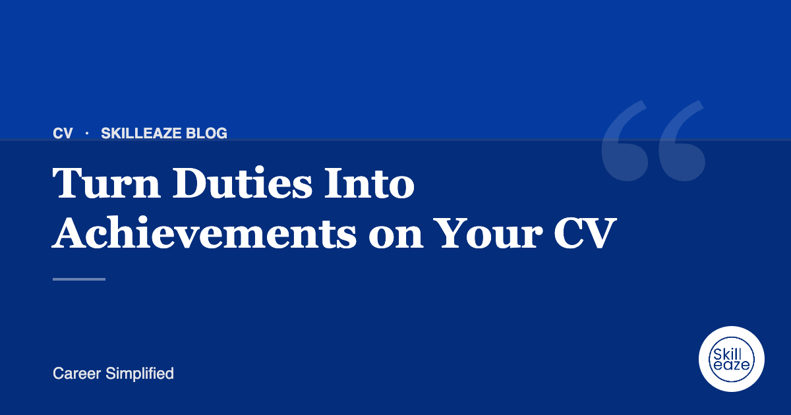

Turn Duties Into Achievements on Your CV
Simple ways to rewrite responsibilities so recruiters see your impact.

Why duties fall flat
'Responsible for customer service' tells the reader what the job was, not how well you did it.
Use the action, scope, result pattern
Start with a verb, add scope (team size, budget, volume) and finish with the result.
Our team writes your ATS CV from your real experience. INR 490 · AED 20 · USD 6 (50% off).
Example
Before: Handled customer complaints. After: Resolved customer escalations for a 12-person support team, reducing repeat complaints over two quarters.
No numbers? Use outcomes
Not every result is a number. Recognition, process improvements and new responsibilities all show impact.
Stay truthful
Only include results you can explain in an interview. Recruiters often ask for details.
Frequently asked questions
What if my job had no measurable results?
Most jobs have outcomes even without numbers. Think about time saved, errors reduced, customers helped, processes improved or responsibilities trusted to you. Describe the change your work made, and add scale such as team size or volume where you can.
How many bullet points should each role have?
Three to six bullets for recent roles is usually enough, with fewer for older positions. Lead with your strongest achievement, keep each bullet to one or two lines and cut anything that does not support your target role.
Can I estimate numbers?
Only if they are reasonable and you can explain them in an interview. Use words like about or over when exact figures are not available. Never invent percentages or results, because they are easy to question and damage trust.
General guidance only. Employer requirements vary; always follow the job advert.
 Chat on WhatsApp
Chat on WhatsApp